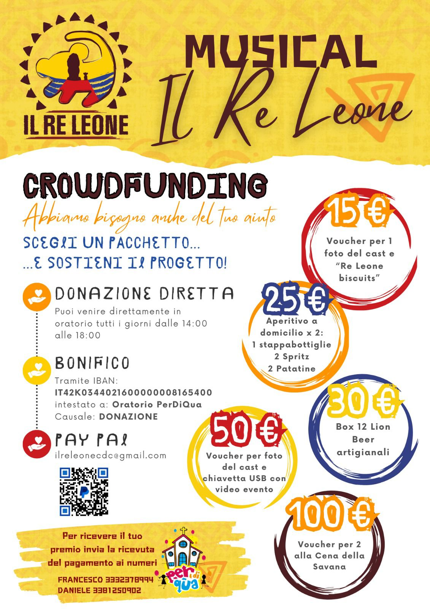

Chi Siamo
Siamo un gruppo di giovani appassionati di recitazione dell’Oratorio PerDiQua di Cerbara, uniti dalla voglia di metterci in gioco e dalla magia del teatro. Per dare vita a questo musical, oltre 70 persone di tutte le età stanno collaborando con entusiasmo, creando maschere, costumi, scenografie e tanto altro. Un grande lavoro di squadra che unisce talento, creatività e passione!
Sostieni il Nostro Progetto
Aiutaci a realizzare questo sogno sostenendo il nostro CROWDFUNDING. Puoi scegliere un pacchetto e ricevere uno dei nostri PREMI esclusivi!
